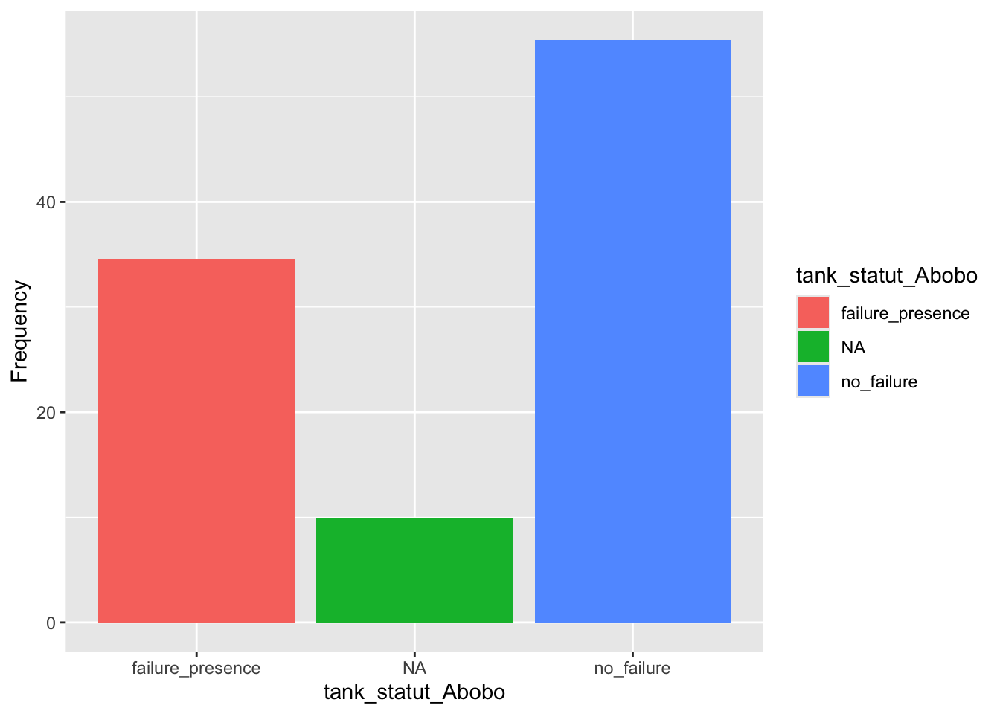
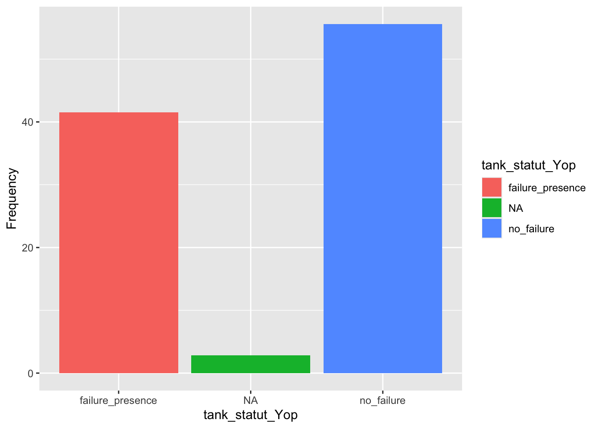
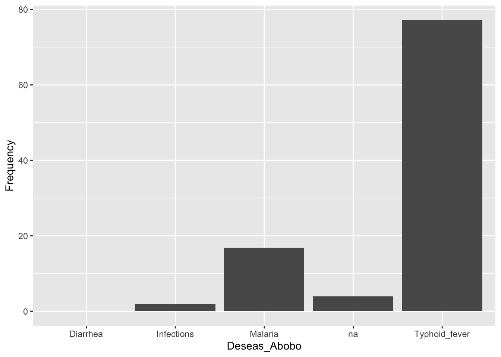
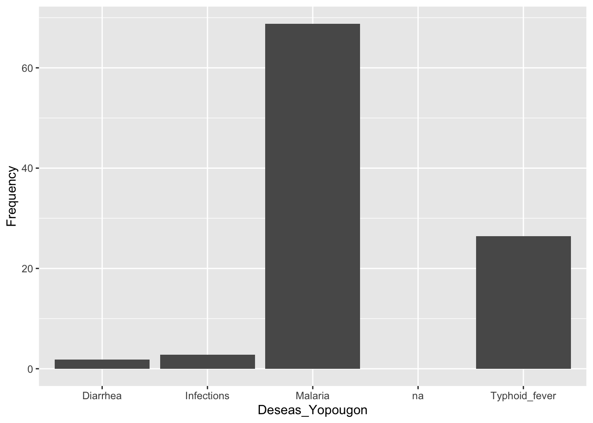

library(readxl)Behavior and practices of managing sanitation facilties in two low-income areas of Abidjan, Cote d’Ivoire
Phaniwa Zie Zoumana Coulibaly ![]()
Introduction
In Abidjan (Cote d’Ivoire), the situation of sanitation was exacerbated by the sociopolitical and military crisis of 2002-2011 (Ouattara et al. 2017). This study was carried out in two low-income parts of Abidjan in order to understand the behavior and practices of the population in terms of managing sanitation facilities, as well as to assess the diseases they face.
Methods
The data were collected from household surveys in two low_income areas of Abidjan. Indeed, the surveys included 101 households in Abobo and 106 households from Yopougon. The survey was focusing on practices related to the management of sanitation facilities (latrines and tanks).
Import
read_excel(here::here("data/raw/Survey_base.xlsx"))# A tibble: 207 × 28
date area_name sex age education living_time housing_type status
<chr> <chr> <chr> <chr> <chr> <chr> <chr> <chr>
1 2018-17-04 Yopougon male 18-35 primary 2013 individual renter
2 2018-17-04 Yopougon female 36-49 no 1981 common cour… owner
3 2018-17-04 Yopougon female 18-35 high school 2007 common cour… renter
4 2018-17-04 Yopougon male 18-35 no 2016 common cour… renter
5 2018-17-04 Yopougon female 18-35 no 2018 common cour… renter
6 2018-17-04 Yopougon male 18-35 primary 2018 common cour… renter
7 2018-17-04 Yopougon female 18-35 no 2015 common cour… renter
8 2018-17-04 Yopougon male 18-35 no 2000 common cour… renter
9 2018-17-04 Yopougon male 36-49 graduate NA common cour… renter
10 2018-17-04 Yopougon male 18-35 graduate 2014 common cour… renter
# ℹ 197 more rows
# ℹ 20 more variables: latrine_presence <chr>, location <chr>,
# latrine_type <chr>, using_latrines <chr>, users <chr>,
# impacts_of_sharing <chr>, latrine_cleaning <chr>, cleaning_freqce_wk <chr>,
# tank_presence <chr>, tank_location <chr>, latrines_nb <chr>,
# tank_operation <chr>, emptying_frqce_yr <chr>, emptying_mode <chr>,
# emptying_price <chr>, household_wastewater <chr>, garbage_cont <chr>, …library(tidyverse)Import data
read_excel(here::here("data/raw/Survey_base.xlsx"))# A tibble: 207 × 28
date area_name sex age education living_time housing_type status
<chr> <chr> <chr> <chr> <chr> <chr> <chr> <chr>
1 2018-17-04 Yopougon male 18-35 primary 2013 individual renter
2 2018-17-04 Yopougon female 36-49 no 1981 common cour… owner
3 2018-17-04 Yopougon female 18-35 high school 2007 common cour… renter
4 2018-17-04 Yopougon male 18-35 no 2016 common cour… renter
5 2018-17-04 Yopougon female 18-35 no 2018 common cour… renter
6 2018-17-04 Yopougon male 18-35 primary 2018 common cour… renter
7 2018-17-04 Yopougon female 18-35 no 2015 common cour… renter
8 2018-17-04 Yopougon male 18-35 no 2000 common cour… renter
9 2018-17-04 Yopougon male 36-49 graduate NA common cour… renter
10 2018-17-04 Yopougon male 18-35 graduate 2014 common cour… renter
# ℹ 197 more rows
# ℹ 20 more variables: latrine_presence <chr>, location <chr>,
# latrine_type <chr>, using_latrines <chr>, users <chr>,
# impacts_of_sharing <chr>, latrine_cleaning <chr>, cleaning_freqce_wk <chr>,
# tank_presence <chr>, tank_location <chr>, latrines_nb <chr>,
# tank_operation <chr>, emptying_frqce_yr <chr>, emptying_mode <chr>,
# emptying_price <chr>, household_wastewater <chr>, garbage_cont <chr>, …data_raw <- read_excel(here::here ("data/raw/Survey_base.xlsx"))Rename column
data_clean<-data_raw|>
rename(stay_time = living_time,
lat_facilities = latrine_presence,
facilities_type = latrine_type,
lat_use = using_latrines,
nb_user = users,
facilities_loc = location,
lat_care = latrine_cleaning,
clean_freq_wk = cleaning_freqce_wk,
tk_status = tank_operation,
empty_freq_yr = emptying_frqce_yr,
empty_mode = emptying_mode,
empty_price = emptying_price,
wastwat_dispos = household_wastewater,
waste_cont = garbage_cont,
waste_cont_loc = garbage_loc,
cont_empy_wk = garbage_emptying_wk,
common_ill = common_diseases
)
data_ready<- data_clean [,-c(1,4,6)]Harmonised data
data_clean <- data_ready|>
mutate(nb_user_new=case_when(
nb_user == "1_3"~"2",
nb_user == "4_6"~"5",
nb_user == "7_10"~"8.5",
nb_user == ">10"~ "10"
)) |>
mutate(clean_freq = case_when(
clean_freq_wk == "1_3" ~ "2",
clean_freq_wk == ">4"~"4"
)) |>
mutate(lat_nb_new= case_when(
latrines_nb == "1_5"~"3",
latrines_nb == "6_10"~"8",
latrines_nb == ">10"~"10"
)) |>
mutate(empty_price_new= case_when(
empty_price == "10000_20000"~"15000",
empty_price == "20000_40000"~"30000",
empty_price == ">40000"~"40000"
)) |>
mutate(cont_empty_wk=case_when(
cont_empy_wk == "1_3"~"2",
cont_empy_wk == "4_7"~"5.5"
)) |>
mutate(nb_user_new = as.numeric(nb_user_new))|>
mutate(clean_freq= as.numeric(clean_freq)) |>
mutate(lat_nb_new= as.numeric(lat_nb_new)) |>
mutate(empty_price_new = as.numeric(empty_price_new)) |>
mutate(cont_empty_wk = as.numeric(cont_empty_wk))Data per area
library(dplyr)
yop_data <- data_clean |>
filter(area_name == 'Yopougon')
Abobo_data <- data_clean |>
filter(area_name == 'Abobo')#Results
lat_use_per_area<-data_clean|>
filter(!is.na(lat_nb_new)) |>
group_by(area_name)|>
summarise(
count = n(),
mean = mean(lat_nb_new),
sd = sd(lat_nb_new),
median = median(lat_nb_new),
min = min(lat_nb_new),
max = max(lat_nb_new)
)library(gt)
library(knitr)lat_use_per_area |>
gt() |>
tab_header(title = "Latrines using by study areas",
subtitle = "Data from 2 neighborhoods") |>
fmt_number(columns = count:max, decimals = 0) |>
cols_label(area_name = "study areas")| Latrines using by study areas | ||||||
|---|---|---|---|---|---|---|
| Data from 2 neighborhoods | ||||||
| study areas | count | mean | sd | median | min | max |
| Abobo | 98 | 6 | 3 | 6 | 3 | 8 |
| Yopougon | 106 | 6 | 3 | 8 | 3 | 10 |
Table 1 highlights the fact that people in the different neighborhoods studied have identical latrine use habits.
lat_use_per_area |>
rename(`study areas` = area_name)# A tibble: 2 × 7
`study areas` count mean sd median min max
<chr> <int> <dbl> <dbl> <dbl> <dbl> <dbl>
1 Abobo 98 5.5 2.51 5.5 3 8
2 Yopougon 106 6.03 2.66 8 3 10library(questionr)
describe (yop_data$tk_status)[106 obs.]
character: "performs well" "performs well" "performs well" "performs well" "performs well" "not working well" "performs well" "not working well" "performs well" "performs well" ...
NAs: 0 (0%) - 3 unique values
n %
"NA" 3 2.8
not working well 44 41.5
performs well 59 55.7
Total 106 100.0 describe (Abobo_data$tk_status)[101 obs.]
character: "NA" "performs well" "not working well" "performs well" "performs well" "not working well" "performs well" "performs well" "performs well" "performs well" ...
NAs: 0 (0%) - 3 unique values
n %
"NA" 10 9.9
not working well 35 34.7
performs well 56 55.4
Total 101 100.0tank_statut_Abobo<-c("failure_presence", "no_failure","NA")
Number<-c(35, 56 ,10)
Frequency<-c(34.6, 55.4 , 9.9)
tb1 <-data.frame(tank_statut_Abobo,Number,Frequency)tank_statut_Yop<-c("failure_presence", "no_failure","NA")
Number<-c(44, 59 ,3)
Frequency<-c(41.5, 55.6 , 2.8)
tb2 <-data.frame(tank_statut_Yop,Number,Frequency)ggplot(data = tb1,
mapping = aes(x= tank_statut_Abobo,
y= Frequency,
fill = tank_statut_Abobo))+
geom_col()
ggplot(data = tb2,
mapping = aes(x= tank_statut_Yop,
y= Frequency,
fill = tank_statut_Yop))+
geom_col()
The results show that a lot of tanks are dysfunctional in the study area. In Abobo 45% of septik tank doesn’t work well, while in Yopougon it concerns 49% of septik tank .
layout(matrix(1:2,1,2))
ggplot(data = tb1,
mapping = aes(x= tank_statut_Abobo,
y= Frequency,
fill = tank_statut_Abobo))+
geom_col();ggplot(data = tb2,
mapping = aes(x= tank_statut_Yop,
y= Frequency,
fill = tank_statut_Yop))+
geom_col()Regarding the health status of the population, the findings highlighted malaria and typhoid fever as the most common diseases in the study area. In the municipality of Abobo , a large proportion of the population was affected by typhoid fever (77%), and only a few by malaria (17%). As far as Yopougon is concerned, malaria is the most common, representing 70%, while typhoid fever is 26%.
describe (yop_data$common_ill)[106 obs.]
character: "malaria" "malaria" "malaria" "malaria" "malaria" "infections" "malaria" "malaria" "typhoid fever" "malaria" ...
NAs: 0 (0%) - 4 unique values
n %
diarrhea 2 1.9
infections 3 2.8
malaria 73 68.9
typhoid fever 28 26.4
Total 106 100.0Deseas_Abobo<-c("Malaria","Typhoid_fever","Infections","Diarrhea","na")
Frequency<-c(16.8 , 77.2 , 1.9 , 0 ,3.9)
tb3 <-data.frame(Deseas_Abobo,Frequency)ggplot(data = tb3,
mapping = aes(x= Deseas_Abobo,
y= Frequency
))+
geom_col()
Deseas_Yopougon<-c("Malaria","Typhoid_fever","Infections","Diarrhea","na")
Frequency<-c(68.8 , 26.4 , 2.8 , 1.8 ,0)
tb4 <-data.frame(Deseas_Yopougon,Frequency)ggplot(data = tb4,
mapping = aes(x= Deseas_Yopougon,
y= Frequency
))+
geom_col()
Conclusions
This research shows that people living in the townships of Abobo and Yopougon use shared latrines. This is contributing to septic tank failure, as well as the occurrence of diseases such as malaria and typhoid fever. However, promoting awareness and establishing sustainable sanitation management initiatives could help to improve people’s living conditions.